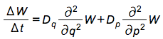
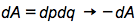
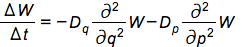
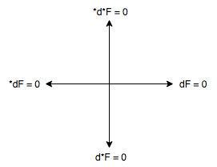

进入下线状态，请开启蓝牙，编辑设备名用作运动标语，如果请求伙伴传播信息请标语用S开头，看周围标语请打开眼睛，让同声的人走在一起
中国人的资产，金山银山不是和流氓共享的，资产的主人是继承中华神传文化的中华儿女, 中华儿女不是奴才
中国人不以霸气，自大，专制为豪，而以仁爱，自由，平等，和平，包容，捍卫普世价值来获得世人的尊重
面对大风大浪，我们不往外看，我们寻求我们的心志，我们相信大海会因着我们的内心的强大而宁息下来, 马太福音8:23-27
杨世海: 量子生命体的外面是振动的经典力学, 这个环境耦合导致量子的丧失，W为维格纳函数

叶志坚: 当我们持续寻求我们的心志, 即积分形式相面积方向的反转变换

李政道: 这个变换下，生命体产生运动等同于微分形式时间的反转，也等同与负电荷的共轭变换

杨振宁: 热量由低温到高温从里而外扩散，量子生命体外部振动渐渐平息，量子的丧失得以恢复
宇称守恒，天地有正气，神与我们同在
道生两仪，两仪生四象，四象生八卦
